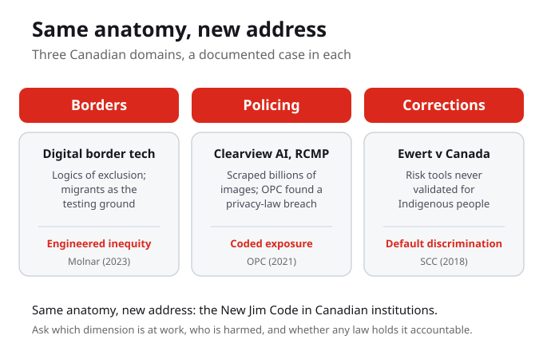
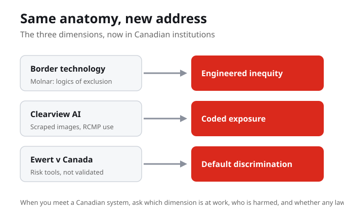

What Do You Know?
1. The Office of the Privacy Commissioner of Canada found that the RCMP's use of Clearview AI:
2. In Ewert v Canada (2018), the Supreme Court found that Correctional Service Canada breached its duty because the risk tools were:
3. Petra Molnar describes the border as a testing ground for digital border technologies. Who is tested on first:
4. Singh (2021) notes that much algorithmic policing in Canada has been authorized through:
5. Clearview AI built its face-search tool by:
6. Robertson, Khoo, and Song (2020) document the spread across Canada of:
7. Mapping the three Canadian cases to the dimensions, Clearview AI is best read as:
Purpose and Learning Outcomes
Week 6 grounds the New Jim Code in Canada. Having named the dimensions, students now examine documented Canadian cases in borders, policing, and corrections, and connect each to the harm it produces for racialized and Indigenous communities.
By the end of this week you should be able to
- Describe at least one documented Canadian case of algorithmic harm in borders, policing, or corrections.
- Explain the OPC finding on the RCMP's use of Clearview AI, and the holding in Ewert v Canada (2018).
- Connect a Canadian case to one dimension of the New Jim Code.
- Identify a Canadian example from your own life and add it to your Living Cartography.
Guiding Questions
- Which dimension, engineered inequity, default discrimination, or coded exposure, do you see in the RCMP's use of Clearview AI?
- In Ewert v Canada, why did it matter that the risk tools were not validated for Indigenous offenders? Which dimension is that?
- Molnar calls border technology a testing ground. Who is it tested on, and why there first?
- Singh notes much algorithmic policing is authorized by courts, not legislation. Why does that gap matter?
- Where in your own Canadian life, your city, your program, your future field, do these systems already operate?

Same Anatomy, New Address
We take three domains and a documented case in each: borders, policing, and the wider field of corrections and services. At the border, Petra Molnar studies digital border technologies that work through logics of exclusion, with migrants and refugees as the testing ground. In policing, Robertson, Khoo, and Song document algorithmic policing across Canada, much of it authorized by courts rather than legislation. Two cases make it concrete: the Privacy Commissioner found the RCMP's use of Clearview AI violated federal privacy law, and in Ewert v Canada the Supreme Court found Correctional Service Canada breached its duty by using risk tools never validated for Indigenous people.
The New Jim Code is not an American problem we are studying from a distance. It runs at our borders, in our police services, and in our corrections, and it has been named in a federal report and a Supreme Court ruling.
Which dimension, engineered inequity, default discrimination, or coded exposure, do you see first in the RCMP's use of Clearview AI?
We take three domains and a documented case
We take three domains and a documented case in each. Borders, policing, and the wider field of housing and services. The logic you learned in the abstract runs through all three.
Borders, policing, and the wider field of housing and services are not separate stories. The same logic you learned in the abstract runs through all three, with a documented Canadian case in each.
Where in your own Canadian life, your city, your program, your future field, do these systems already operate?
At the border, Petra Molnar studies digital border technologies
At the border, Petra Molnar studies digital border technologies that work through logics of exclusion, with migrants and refugees as the testing ground. In policing, Robertson, Khoo, and Song document algorithmic policing across Canada, and Shawn Singh notes much of it is authorized by courts, not legislation.
Molnar calls the border a testing ground because migrants and refugees have the least power to refuse. Tools are tried on them first, then used more widely. Singh adds that much algorithmic policing is authorized by courts, not legislation, which leaves an oversight gap.

Two cases make it concrete
Two cases make it concrete. Clearview AI scraped billions of images to build a face-search tool; the RCMP used it, and the Privacy Commissioner found that use violated federal privacy law. And in Ewert v Canada, 2018, the Supreme Court found that Correctional Service Canada breached its duty by using risk tools never validated for Indigenous people. That is default discrimination, named by the highest court in the country.
Clearview AI scraped billions of images, the RCMP used it, and the Privacy Commissioner found that use violated federal privacy law. In Ewert v Canada the Supreme Court found Correctional Service Canada breached its duty by using risk tools never validated for Indigenous people. That is default discrimination, named by the highest court in the country.
In Ewert v Canada, why did it matter that the risk tools were not validated for Indigenous offenders, and which dimension is that?

Not new dimensions
These are not new dimensions. Clearview is coded exposure; Ewert is default discrimination; border tech is engineered inequity. Same anatomy, new address. So when you meet a Canadian system, ask which dimension is at work, who is harmed, and whether any law holds it accountable.
These are not new dimensions. Clearview is coded exposure, Ewert is default discrimination, and border tech is engineered inequity. Same anatomy, new address. When you meet a Canadian system, ask which dimension is at work, who is harmed, and whether any law holds it accountable.
What You Are Learning This Week
The New Jim Code Is Already Here
These systems are not in some other country. They run at Canadian borders, in Canadian police services, and in Canadian corrections. Naming where they already operate is the first move toward holding them accountable.
Two Anchors Name the Harm
The Privacy Commissioner found that the RCMP's use of Clearview AI violated federal privacy law, and in Ewert v Canada the Supreme Court found Correctional Service Canada breached its duty by using risk tools never validated for Indigenous people. Federal oversight and the highest court have both named it.
The Border Is a Testing Ground
Molnar describes digital border technologies that work through logics of exclusion. Migrants and refugees, with the least power to refuse, are tested on first, before the tools are used more widely.
Authorized by Courts, Not Legislation
Robertson, Khoo, and Song document algorithmic policing across Canada, and Singh notes much of it is authorized through court rulings rather than clear legislation. That gap leaves the tools without debated oversight.
Connections to This Week
In the weeks before this, we named the three dimensions of the New Jim Code in the abstract: engineered inequity, default discrimination, and coded exposure. We learned to recognize the anatomy of algorithmic harm before meeting it in any one place.
We ground those dimensions in documented Canadian cases across borders, policing, and corrections. Molnar's digital border technologies are engineered inequity, the RCMP's use of Clearview AI is coded exposure, and Ewert v Canada is default discrimination. Same anatomy, new address.
Next comes the review that ties Part II together and the move into Part III. The question shifts from naming where these systems operate to what it asks of you to know they run in your own city, your own program, and your future field.
Reflection Corner
These systems are not in some other country; they run at our borders, in our police services, and in our corrections. When the New Jim Code is already in your own city, what does it ask of you to know that, and what changes the moment you can name it where you live?
Your notes save automatically on this device and stay after you close your browser or shut down. Use Save my notes (below) to download a copy you can keep or open on another device.
What You Now Know
Why did it matter in Ewert v Canada that the risk tools were not validated for Indigenous offenders:
Molnar calls border technology a testing ground because:
Singh's point that much algorithmic policing is authorized by courts rather than legislation matters because:
The week's core claim about the three Canadian cases is that they are:
Read With These Questions
1What is the central argument or claim? Put it in one sentence.
2What evidence does the author use to support it?
3Which key concept or term carries the most weight, and how is it defined?
4What does the argument assume, and whose perspective might be missing?
5How does this reading connect to this week's topic and the other sources?
6Where do you agree, and where would you push back, and why?
7What is one question you still have after reading?
What to Do Next
Read Molnar on Digital Border Technologies
Molnar (2023), Digital border technologies, techno-racism and logics of exclusion. Focus on why the border becomes a testing ground and why migrants and refugees are tested on first.
Read the Citizen Lab and OPC Cases
Robertson, Khoo, and Song (2020), To surveil and predict, and the Office of the Privacy Commissioner of Canada (2021) report on police use of facial recognition. Connect each Canadian case to the dimension it shows.
Add a Canadian Example to Your Living Cartography
Identify one Canadian system from your own life, your city, your program, or your future field, and add it. Name which dimension is at work, who is harmed, and whether any law holds it accountable.
References
Robertson, K., Khoo, C., and Song, Y. (2020). To surveil and predict: A human rights analysis of algorithmic policing in Canada. Citizen Lab and International Human Rights Program, University of Toronto.
Molnar, P. (2023). Digital border technologies, techno-racism and logics of exclusion. International Migration. https://doi.org/10.1111/imig.13187
Office of the Privacy Commissioner of Canada. (2021). Police use of facial recognition technology in Canada and the way forward. Special report to Parliament.
Ewert v Canada, 2018 SCC 30.
Singh, S. (2021). Algorithmic policing technologies in Canada.